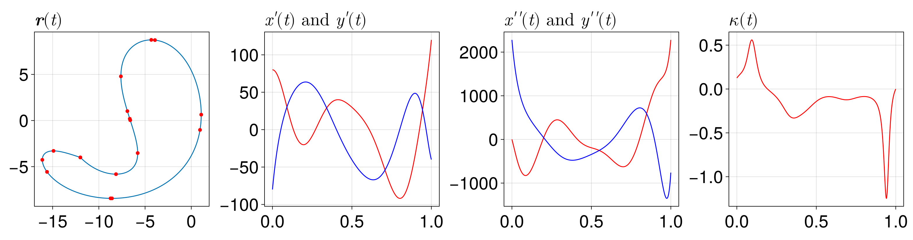
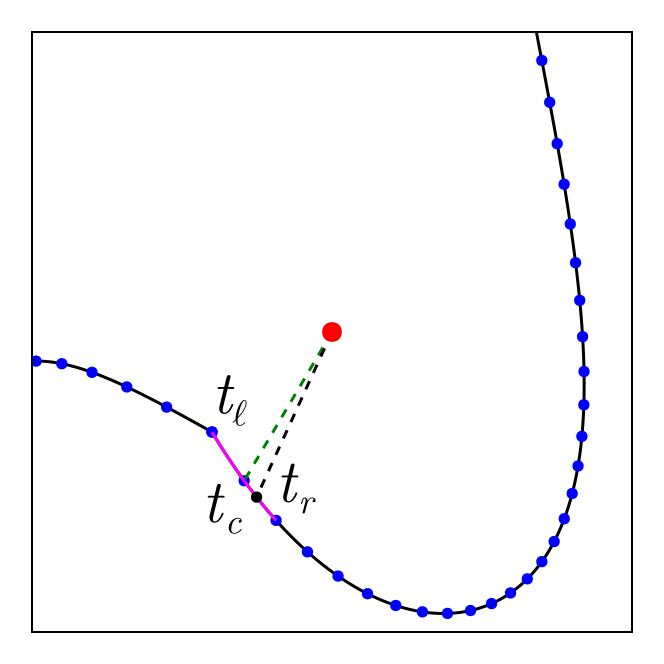
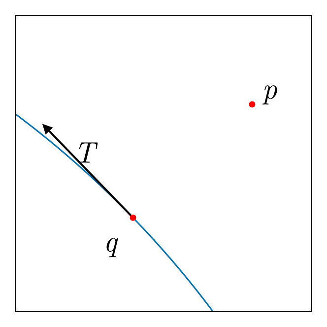
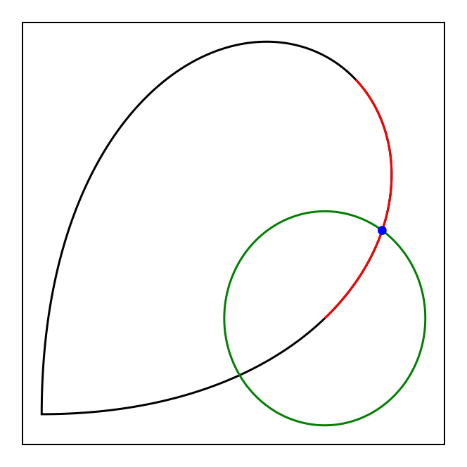

Curves
In this section we discuss the mathematics behind the curves we provide in this package, and the operations that we perform on curves.
AbstractParametricCurve
Before we get into the curves themselves, let us first discuss what we need from a parametric curve, i.e. for a curve subtyping AbstractParametricCurve. We let $\vb r \colon [0, 1] \to \mathbb R^2$ denote a parametric curve, and we always assume the curve to be non-intersecting (except at the endpoints) and three times continuously differentiable. For the discussion below, there may be some curves which take a simpler approach than the general approach described, and this will be indicated later when we discuss these specific curves.
Arc length
One important quantity to compute is the arc length over some interval $t_1 \leq t \leq t_2$ along the curve. In general, this is given by the integral
\[s(t_1, t_2) = \int_{t_1}^{t_2} \|\vb r'(t)\| \, \mathrm dt,\]
which is typically computed using numerical integration. In this package, we use Gauss-Legendre quadrature so that
\[s(t_1, t_2) \approx \frac{t_2 - t_1}{2} \sum_{i=1}^n w_i \left\|\vb r'\left(\frac{t_2 - t_1}{2}\xi_i + \frac{t_1 + t_2}{2}\right)\right\|,\]
where $\xi_i$ are the nodes and $w_i$ are the weights of the Gauss-Legendre quadrature rule, and $n$ are the number of nodes in use. We use $n = 250$ for all integrals in this package.
Curvature
The curvature of a curve describes how much the curve deviates from a straight line at a given point. It is defined as
\[\kappa(t) = \frac{\|\vb r'(t) \times \vb r''(t)\|}{\|\vb r'(t)\|^3},\]
where $\times$ denotes the cross product; in $\mathbb R^2$, we are defining $\vb u \times \vb v = u_1v_2 - u_2v_1$. Writing $\vb r(t) = (x(t), y(t))$, this can be written as
\[\kappa(t) = \frac{x'(t)y''(t) - y'(t)x''(t)}{(x'(t)^2 + y'(t)^2)^{3/2}}.\]
Total variation
The total variation of $\vb r(t)$ over $t_1 \leq t \leq t_2$ is defined as the total absolute change in the tangent angle, which we can write as
\[TV(t_1, t_2) = \int_{C(t_1, t_2)} |\mathrm d\theta|,\]
where $\theta$ is the tangent angle of the curve, and $C(t_1, t_2)$ is the curve segment from $t_1$ to $t_2$. This is also called the total absolute curvature, since $|\mathrm d\theta| = |\kappa(s)|\mathrm ds$ (treating $s$ as the arc length parameter). Thus,
\[TV(t_1, t_2) = \int_{t_1}^{t_2} |\kappa(t)|\|\vb r'(t)\|\, \mathrm dt,\]
where we have used $\mathrm ds = \|\vb r'(t)\|\, \mathrm dt$. We evaluate this using numerical integration just as we did for arc length, writing
\[TV(t_1, t_2) \approx \frac{t_2 - t_1}{2} \sum_{i=1}^n w_i \left|\kappa\left(\frac{t_2 - t_1}{2}\xi_i + \frac{t_1 + t_2}{2}\right)\right|\left\|\vb r'\left(\frac{t_2 - t_1}{2}\xi_i + \frac{t_1 + t_2}{2}\right)\right\|.\]
The reason that total variation is important is that it gives a measure of how much the curve is bending over the interval $t_1 \leq t \leq t_2$, meaning we can use the total variation to assess how many edges are needed to give a reasonable piecewise linear approximation to the curve.
There is a way to evaluate $TV(t_1, t_2)$ without computing the integral. By default, any new AbstractParametricCurve will do so, but for the curves we have implemented in this package we apply the following idea. First, note that the total variation $TV(t_1, t_2)$ over some curve where the curve's orientation is monotone is simply the angle between the tangent vectors at the endpoints. To see this, note that since the orientation is monotone the angle $\theta$ is monotone, and so the total change in the angle is simply the difference in the angles at the endpoints. With this idea, we take $C(t_1, t_2)$ and write $C(t_1, t_2) = \cup_{i=1}^m C_i$ where $C_i \cap C_j = \emptyset$ for $i \neq j$ and $C_i$ is a curve segment where the orientation is monotone. Thus, the integral can be evaluated by simply summing the angles between the tangent vectors at the endpoints of each $C_i$.
One complication with the above approach is that actually finding the $C_i$ can be difficult. To do so, we need to understand where the curve's orientation changes. There are five cases where this can occur that we list below, letting $t^*$ be a point where the orientation changes and $\vb r(t) = (x(t), y(t))$:
- Horizontal turning point: $x'(t^*) = 0$.
- Vertical turning point: $y'(t^*) = 0$.
- Horizontal inflection point: $x''(t^*) = 0$ and $x'''(t^*) \neq 0$.
- Vertical inflection point: $y''(t^*) = 0$ and $y'''(t^*) \neq 0$.
- Inflection point: $\kappa(t^*) = 0$.
These cases do not have to occur simultaneously - any of them is sufficient to potentially cause a change in orientation; in our implementation, for cases 3 and 4 we do not check whether $x'''(t^*)$ or $y'''(t^*)$ is zero. Note that the first four conditions together are not necessarily needed for finding these monotone pieces, but they guarantee that the change in orientation is at most $\pi/2$, making it easier to compute the total change in orientation (since a change in orientation of $\beta$ could also be $2\pi - \beta$ if $\beta > \pi/2$). To find these points $t^*$, we use Newton's method on all of the respective functions. So, when initialising a curve that uses this approach, we first find all $t^* \in [0, 1]$ where any of these changes occur, and order them so that $0 \leq t_1^* \leq \cdots \leq t_m^* \leq 1$. These values define the monotone pieces that the curve is split into. An example of these orientation markers $t^*$ is shown below, where we show the markers on the curve using red dots.
There are many orientation markers on this curve. Only two of these come from $\kappa(t) = 0$, with all the others coming from $x', y', x''$, and $y''$, as we can see from the graphs shown.
Point on a curve closest to a point
An important problem is finding the point on a curve $\vb r(t)$ that is closest to a given point $p$. Our generic approach to this relies on there being a lookup table for $\vb r(t)$ which stores the values $\vb r(t_i)$ for $i=1,2,\ldots,n$, where $t_i = (i-1)/(n-1)$ to allow for binary search to be used.
The approach starts by computing $(i, \delta^2)$, where $i$ is the index so that the point $q = \vb r(t_i)$ in the lookup table is closest to $p$, and $\delta = \|p - q\|$. We can then apply binary search in the following way to find an approximation to the closest point on $\vb r(t)$ closest to $p$ up to some tolerance $\varepsilon$ ($\varepsilon = 10^{-12}$ in this package); in what follows, we assume $1 < i < n$, but these boundary cases can be handled in a similar way:
- First, let $t_\ell = t_{i-1}$, $t_c = t_i$, and $t_r = t_{i+1}$, and compute $w = t_r - t_\ell$. If $w < \varepsilon$, then we are done, otherwise we go to step 2.
- Compute $t_{\ell c} = (t_\ell + t_c) / 2$, $t_{cr} = (t_c + t_r) / 2$, $\delta_{\ell c} = \|p - \vb r(t_{\ell c})\|$, and $\delta_{cr} = \|p - \vb r(t_{cr})\|$. If $\delta_{\ell c} < \delta_{c r}$, then we choose the left-middle to be the new center point, replacing $t_r$ with $t_c$ and $t_c$ with $t_{\ell c}$. Otherwise, we choose the right-middle to be the new center point, replacing $t_\ell$ with $t_c$ and $t_c$ with $t_{cr}$. We then go back to step 1 with $w = t_r - t_\ell$.
Once the above procedure converges, the final value of $t_c$ gives the point on $\vb r(t)$ that is closest to $p$, i.e. $\vb r(t_c)$ is the approximation to the closest point on $\vb r(t)$ to $p$.
An example of this procedure is shown below: The point of interest is shown in red, and the lookup points are shown in blue. The lookup point closest to the point of interest is shown via the green line, which defines $t_\ell \leq t_c \leq t_r$, and the magenta line shows the section of the curve corresponding to this interval $[t_\ell, t_r]$. The black dot shows the closest point on the curve to the point of interest. The binary search for this problem would start by shrinking into the interval $[t_c, t_r]$, replacing $t_c$ by $(t_c + t_r)/2$, since $p$ is closer to that side of $t_c$ than to $[t_\ell, t_c]$.
Position of a point relative to a curve
It is important that we know how to find the position of a point $p$ relative to some curve $\vb r(t)$, meaning whether $p$ is left or right of $\vb r(t)$. The approach we take for this is relatively simple:
- First, find $t^*$ so that $q = \vb r(t^*)$ is the closest point on $\vb r(t)$ to $p$.
- Compute $T = \vb r'(t^*)$ and construct the line segment $L$ that connects $q$ and $T$.
- The position of $p$ is then determined by the position of $p$ relative to $L$.
In the example below, $p$ would be right of the curve as it is to the right of the tangent vector $T$.
Computing equidistant splits
We may want to split a curve between two points $t_1 \leq t \leq t_2$ at a point $t^*$ such that $s(t_1, t^*) = s(t^*, t_2)$. This is done using a simple bisection method:
- Compute $s_{12} = s(a, b)$, let $s = s_{12} / 2$, and set $t = (a + t_2) / 2$, where $a = t_1$.
- For 100 iterations, do: Compute $s' = s(a, t)$. If $|s' - s| < \varepsilon_1$ or $|b - a| < \varepsilon_2$, then break and return $t = t^*$. Otherwise, replace $t_1$ with $t$ if $s' < s$, and replace $t_2$ with $t$ otherwise. Finally, let $t = (t_1 + t_2) / 2$ and continue iterating.
- Return $t$ as the equidistant split point.
Computing equivariation splits
Another important operation is the computation of a point $t$ that splits a given curve $\vb r(t)$ between two points $t_1 \leq t \leq t_2$ at a point $t^*$ such that $TV(t_1, t^*) = TV(t^*, t_2)$. This is called an equivariation split, and is useful as it gives a way to divide a curve into two halves in a more natural way than using, say, an equidistant split which might not be as appropriate a split for certain curves. The computation of $t^*$ is done using a simple bisection method that follows the exact same approach as for equidistant splits, except that instead of computing arc length we compute the total variation, and we initialise $t$ as the equidistant split rather than the midpoint of the interval.
Computing the inverse of a curve
We often need to find the point $t$ that corresponds to a point $q$ on a curve $\vb r(t)$. This is done by simply finding the closest point on the curve to $q$ and returning the parameter value of that point.
Computing the angle between two curves
Given two curves $\vb r_1$ and $\vb r_2$, a problem of interest is to consider the angle between them at some point $t$. This is done by computing the tangent vectors at the point $t$ for both curves, and then computing the angle between these two tangent vectors. Computing these angles is needed during mesh refinement, since we need to protect against small angles.
Computing the intersection of a curve with a circle
For mesh refinement we need to use concentric circular shells to protect against small angles. For curves, this means that we need to know how to compute the intersection of a circle with a given curve. In particular, given a circle of radius $r$ centered at $\vb r(t_1)$, we need to find the first intersection $t^*$ of the curve with the circle, where $t_1 \leq t \leq t_2$, assuming that such an intersection exists.
The procedure for this problem starts by computing an interval $[t_i, t_j]$ to be used for computing $t^*$ using a bisection method. To find $t_i$ and $t_j$, we initially set $t_i = t_1$ and $t_j = t_2$. Then, for $n = 1, 2, \ldots, 500$: Compute $t_n = t_1 + (n - 1)(t_2 - t_1)/(500 - 1)$ and let $q = \vb r(t_n)$. If $\|p - q\| > r$ we set $t_j = t_n$ and return $[t_i, t_j]$, else we set $t_i = t_n$ and continue. There is also a method for finding $[t_i, t_j]$ using a lookup table, but we do not describe that here. Once we have this interval $[t_i, t_j]$, a bisection method is used to find $t^*$, remembering that we are trying to solve $\|\vb r(t) - \vb r(t^*)\| = r$. An example of such an intersection is shown below. The red curve shows the portion of the curve over an interval $[t_1, t_2]$, and the green circle shows the circle of radius $r$ centered at a point $\vb r(t_1)$. The blue point shows the first intersection of the curve with the circle. The other intersection is ignored as it is not on the red portion.
LineSegment
Now we discuss in detail all the curves we provide in this package, starting with LineSegment. We represent line segments as oriented segments between points $p$ and $q$ parametrised by $\vb r(t) = p + t(q-p)$ for $0 \leq t \leq 1$. The implementation of the above operations for LineSegment is straightforward, and we do not discuss them here.
CircularArc
The curve CircularArc is for representing a circular arc, meaning a part of a circle with radius $r$ and center $\vb c$ spanning some angle $\theta_1 \leq \theta \leq \theta_2$, parametrised over $0 \leq t \leq 1$. We parametrise this arc using
\[\vb r(t) = \vb c + r(\cos \theta_t, \sin \theta_t),\]
where $\theta_t = \theta_1 + t\Delta\theta$ and $\Delta\theta=\theta_2-\theta_1$. With this parametrisation, we also have
\[\begin{aligned} \vb r'(t) &= \left(-r\Delta\theta \sin \theta_t, r\Delta\theta \cos \theta_t\right), \\ \vb r''(t) &= \left(r\Delta\theta^2 cos \theta_t, r\Delta\theta^2 \sin\theta_t\right). \end{aligned}\]
In addition:
- To determine the position of a point relative to the circle, we simply use the
in_circlepredicate. - The arc length $s(t_1, t_2)$ is simply $s(t_1, t_2) = r|\Delta\theta|(t_2-t_1)$.
- The curvature is $\kappa(t) = \text{sgn}(\Delta\theta) / r$.
- The total variation is $TV(t_1, t_2) = |\Delta\theta|(t_2 - t_1)$.
- The equidistant and equivariation splits are both $t^* = (t_1 + t_2) / 2$.
- Given a point $p$ on the circle, its inverse is $t^* = (\theta - \theta_1) / \Delta \theta$, where $\theta = \arctan(p_y - c_y, p_x - c_x)$. If $t^* < 0$, the inverse is instead $t^* + 2\pi/|\Delta\theta|$; if $t^* > 1$, the inverse is instead $t^* - 2\pi/|\Delta\theta|$.
EllipticalArc
An EllipticalArc is used to represent an arc of an ellipse, defined by a center $\vb c$, horizontal radius $\alpha$, vertical radius $\beta$, a rotation angle $\theta$, a start angle $\theta_1$ (as measured from the center), and a final angle $\theta_2$. We define $\Delta\theta=\theta_2-\theta_1$. The parametrisation of this arc is
\[\vb r(t) = \begin{bmatrix} c_x + \alpha \cos(\theta_t) \cos \theta - \beta \sin(\theta_t) \sin \theta \\ c_y + \alpha \cos(\theta_t) \sin \theta + \beta \sin(\theta_t) \cos \theta \end{bmatrix},\]
where $\theta_t = \theta_1 + t\Delta\theta$. The derivatives of $\vb r(t)$ are given by
\[\begin{aligned} \vb r'(t) &= \Delta\theta\begin{bmatrix} -\alpha \sin(\theta_t)\cos\theta-\beta \cos(\theta_t)\sin\theta \\ -\alpha\sin(\theta_t)\sin\theta+\beta\cos(\theta_t)\cos\theta\end{bmatrix}, \\ \vb r''(t) &= \Delta\theta^2 \begin{bmatrix} -\alpha\cos(\theta_t)+\beta\sin(\theta_t)\sin\theta \\ -\alpha\cos(\theta_t)\sin\theta-\beta\sin(\theta_t)\cos\theta \end{bmatrix}. \end{aligned}\]
The curvature is given by
\[\kappa(t) = \text{sgn}(\Delta\theta)\frac{\alpha\beta}{\left(\alpha^2\sin^2(\theta_t)+\beta^2\cos^2(\theta_t)\right)^{3/2}}.\]
The total variation is easily computed by simply taking the angle between the tangent vectors at the endpoints since the orientation is monotone.
To determine the position of a point relative to the arc, we transform into coordinates where the ellipse becomes a unit circle and consider the position of the transformed coordinates. In particular, for a point $p = (x, y)$, we transform it into
\[p' = \left(\frac{(x - c_x)\cos \theta + (y - c_y) \sin \theta}{\alpha}, \frac{-(x - c_x)\sin \theta + (y - c_y) \cos \theta}{\beta}\right),\]
and then compare it to the unit circle.
The inverse of a point $p$ is computed as follows. First, compute
\[(x', y') = \left(\frac{(p_x - c_x)\cos\theta + (p_y - c_y)\sin\theta}{\alpha}, \frac{-(p_x-c_x)\sin\theta+(p_y-c_y)\cos\theta}{\beta}\right),\]
and then $t' = \arctan(y', x')$ modulo $2\pi$. Finally, $t^* = (t' - \theta_1) / \Delta\theta$; if $t^* < 0$, the inverse is instead $t^* + 2\pi/|\Delta\theta|$; if $t^* > 1$, the inverse is instead $t^* - 2\pi/|\Delta\theta|$.
BezierCurve
The next curve we discuss is the BezierCurve. Bézier curves are curves that are defined by a set of control points. They are not interpolating curves, but their shape can be highly controlled using the control points. A great resource on Bézier curves is this primer. The precise definition of Bézier curves will not be delved into here.
To write down the parametrisation of a Bézier curve, let the control points be $\vb p_1, \ldots, \vb p_n$. Our parametrisation is then
\[\vb r(t) = \sum_{i=0}^{n-1} \binom{n-1}{i}(1-t)^{n-1-i}t^i\vb p_{i+1}.\]
This is not the form we use to evaluate $\vb r(t)$, though. Instead, de Casteljau's algorithm is used to evaluate the curve, a recursive algorithm for evaluating $\vb r(t)$.
To differentiate $\vb r(t)$, we can use the fact that the derivative of an $(n-1)$th degree Bézier curve (our curve is of degree $n-1$) is an $(n-2)$th degree Bézier curve with control points $\vb p_{i+1} - \vb p_i$. Thus, differentiating $\vb r(t)$ is the same as applying de Casteljau's algorithm to an $(n-2)$th degree Bézier curve with control points $\vb p_{i+1} - \vb p_i$. The same is true for twice and thrice differentiating $\vb r(t)$; for the second derivatives the control points are $\vb p_{i+2} - 2\vb p_{i+1} + \vb p_i$, and for the third derivatives the control points are $\vb p_{i+3} - 3\vb p_{i+2} + 3\vb p_{i+1} - \vb p_i$.
For all the other operations, we use the generic approaches previously described, as Bézier curves do not lend themselves nicely to simple formulas for these operations.
BSpline
The next curve we discuss is the BSpline. B-splines are controlled by a set of control points and a set of knots. They are not interpolating curves. In our implementation, we do not allow for general knots to be provided, and the spline always goes through the first and last points, but not any of the intermediate points. Rather than go through the precise definition here, you are better off reading for example this section of the primer here, or The NURBs Book by Piegl and Tiller (1997).
For our implementation, you just need to know that we use de Boor's algorithm for evaluating a B-spline. Similarly, since the derivative of a B-spline is just another B-spline, we can use de Boor's algorithm to differentiate a B-spline, and similarly for its second and third derivatives. For all the other operations we use the generic approaches previously described just as we did for Bézier curves.
CatmullRomSpline
We now discuss Catmull-Rom splines, which is an interpolating spline defined by a set of piecewise cubic polynomials. To discuss these splines, we need to consider the Catmull-Rom spline defined by a set of four points $\vb p_0, \vb p_1, \vb p_2, \vb p_3$. This is a cubic polynomial of the form $\vb q(t) = \vb a t^3 + \vb b t^2 + \vb c t + \vb d$ over $0 \leq t \leq 1$ that interpolates the four points, but is drawn only between $\vb p_2$ and $\vb p_3$ with $\vb q(0) = \vb p_1$ and $\vb q(1) = \vb p_2$. We also define two parameters $\alpha$ and $\tau$ that define the type of the parametrisation and the tightness of the spline, respectively; $\alpha = 0$ is called a uniform parmetrisation, $\alpha = 1/2$ is called a centripetal parametrisation, and $\alpha = 1$ is called a chordal parametrisation. Increasing $\tau$ makes the spline tighter, and $\tau = 1$ turns the spline into a piecewise linear curve. In this package, we only directly support $\alpha=1/2$ and $\tau=0$.
Using these control points and parameters, following this article, we can compute the coefficients of our polynomial as follows:
\[\begin{aligned} \vb m_1 &= (1 - \tau) (t_2 - t_1) \left(\frac{\vb p_1 - \vb p_0}{t_1 - t_0} - \frac{\vb p_2 - \vb p_0}{t_2 - t_0} + \frac{\vb p_2 - \vb p_1}{t_2 - t_1}\right), \\ \vb m_2 &= (1 - \tau) (t_2 - t_1) \left(\frac{\vb p_2 - \vb p_1}{t_2 - t_1} - \frac{\vb p_3 - \vb p_1}{t_3 - t_1} + \frac{\vb p_3 - \vb p_2}{t_3 - t_2}\right), \\ \vb a &= 2(\vb p_1 - \vb p_2) + \vb m_1 + \vb m_2, \\ \vb b &= -3(\vb p_1 - \vb p_2) - 2\vb m_1 - \vb m_2, \\ \vb c &= \vb m_1, \\ \vb d &= \vb p_1, \end{aligned}\]
where $t_i = t_{i-1} + \|\vb p_i - \vb p_{i-1}\|^\alpha$ and $t_0=0$ for $i=1,2,3$.
Using this definition of a Catmull-Rom spline through four points, we can generalise it to a set of $n$ control points $\vb p_1,\ldots,\vb p_n$. Firstly, since a Catmull-Rom spline through four points only draws through the inner two points, if we want the spline to interpolate through all of the control points then we need to define two new control points $\vb p_0$ and $\vb p_{n+1}$ so that $\vb p_1$ and $\vb p_n$ are included in the interior of some spline segment (if the spline is closed so that $\vb p_1 = \vb p_n$, no new points are needed). Using ideas from CatmullRom.jl, we define $\vb p_0$ as follows: We reflect $x_2$, the $x$ coordinate of $\vb p_2$, left of $x_1$ to a point $x = x_1 - (x_2 - x_1) = 2x_1 - x_2$. We then need to find the point $y$ that best suits the spline at this point $x$. We do this using rational interpolation, specifically Thiele's quartic rational interpolant. If the resulting $y$ is not finite, we use the cubic rational interpolant and, if that fails, we use quadratic interpolation. If $x_1 = x_2$, we instead apply this idea to $y$. We then set $\vb p_0 = (x, y)$, and apply the same ideas to $\vb p_{n+1}$.
We now have a set of control points $\vb p_0, \vb p_1, \ldots, \vb p_n, \vb p_{n+1}$, and are interested in a Catmull-Rom spline that interpolates through $\vb p_1,\ldots,\vb p_n$. To evlauate the spline $\vb r(t)$, we start by defining the knots $t_i'= t_{i-1}' + \|\vb p_i - \vb p_{i-1}\|^\alpha$, where $t_1'=0$, and then set $t_i = t_i'/t_n$ so that $0 \leq t_i \leq 1$. We then find the knot interval $[t_j, t_{j+1}]$ that contains $t$, and map $t$ into this interval using $t = (t - t_j)/(t_{j+1} - t_j)$. Next, we construct the Catmull-Rom spline segment through $\vb p_{j-1}$, $\vb p_j$, $\vb p_{j+1}$, and $\vb p_{j+2}$, and evaluate this segment at $t$ to get $\vb r(t)$.
To differentiate $\vb r(t)$, we apply similar ideas as above except that we differentiate the Catmull-Rom spline segment through $\vb p_{j-1}$, $\vb p_j$, $\vb p_{j+1}$, and $\vb p_{j+2}$, and evaluate this derivative at $t$ to get $\vb r'(t)$ (after multiplying by $1/(t_{j+1} - t_j)$). Similar ideas apply for computing $\vb r''(t)$ and $\vb r'''(t)$.
To compute the arc length $s(t_1, t_2)$, we store the arc lengths of each spline segment (computed using numerical integration) to quickly compute the arc length across any segments entirely covered in $t_1 \leq t \leq t_2$, and then use numerical integration for any remaining segments not completely covered.
For the remaining operations, we use the generic approaches previously described.